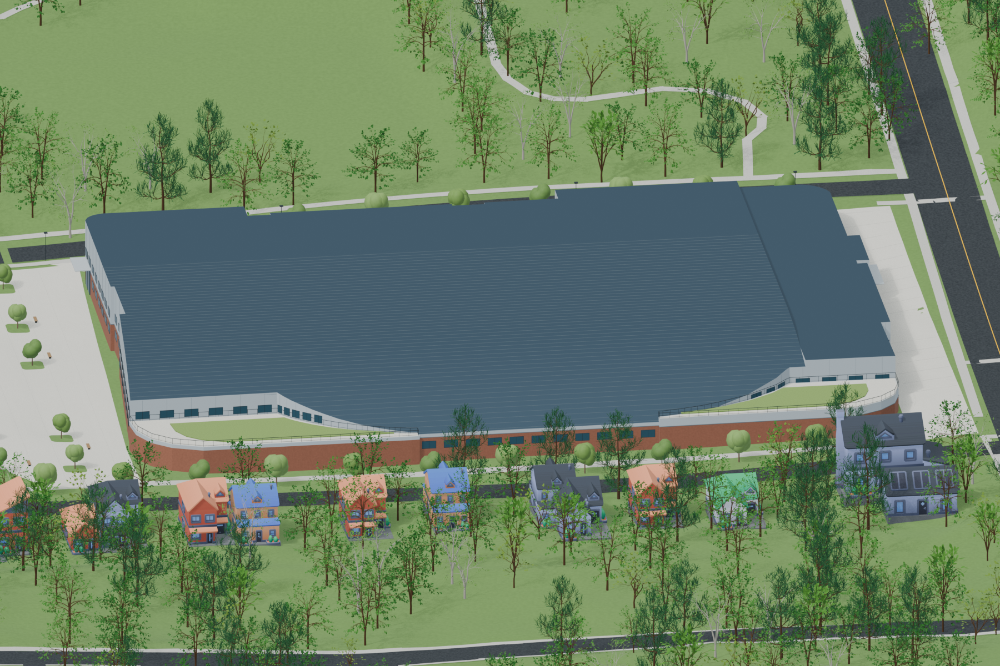

Conceptual Renders

Our Cheney has created renders of the proposed indoor track from the layout the Atlanta Track Club provided. The layout is difficult to match to the elevation changes along Ami. These renders are likely not accurate to what will be built. They are close enough to give an idea of the scale of the building.